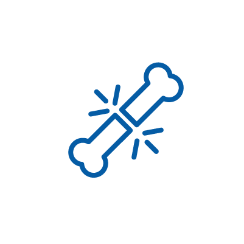
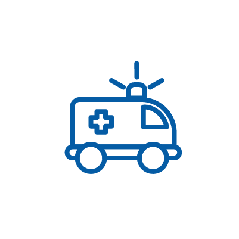
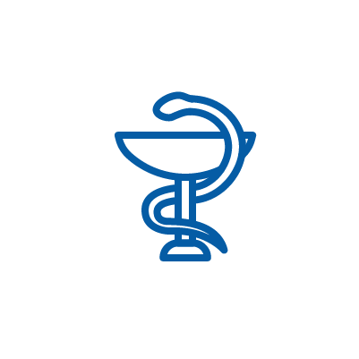

Khoa Ngoại Thần kinh – Cột sống
Khoa Ngoại Thần kinh - Cột sống là khoa mũi nhọn của bệnh viện, chuyên khám. Chọn bác sĩ và đặt lịch hẹn nhanh chóng qua hệ thống.

Khoa Chấn thương chỉnh hình
Khoa Chấn thương chỉnh hình cung cấp dịch vụ chuyên sâu. Tìm thời gian rảnh và xác nhận lịch khám.
Khoa Tai – Mũi – Họng
Khoa Tai Mũi Họng của Bệnh viện Đa khoa Quốc tế Nam Sài Gòn khám. Nhận thông báo nhắc lịch và quản lý lịch hẹn cá nhân.
Khoa Ngoại tổng hợp
Là một trong những chuyên khoa mũi nhọn của Bệnh viện, Khoa Ngoại tổng hợp. Tìm kiếm bác sĩ theo đánh giá và đặt lịch dễ dàng.
Khoa Khám bệnh
Khoa Khám bệnh - Bệnh viện Đa khoa Quốc tế Nam Sài Gòn cung cấp. Đặt lịch khám ban đầu với bác sĩ phù hợp theo thời gian mong muốn.
Khoa Nội tổng hợp
Khoa Nội tổng hợp tiếp nhận điều trị nội trú tất cả các bệnh nội. Chọn chuyên gia và đặt lịch tư vấn trực tuyến hoặc ngoại trú.
Khoa Gây mê – Hồi sức
Gây mê - Hồi sức là một phần thiết yếu của y khoa hiện đại. Đặt lịch hỗ trợ phẫu thuật và theo dõi hậu phẫu qua hệ thống.
Khoa Xét nghiệm
Khoa Xét nghiệm – Bệnh viện Đa khoa Quốc tế Nam Sài Gòn với đầy. Đặt lịch xét nghiệm kết hợp với khám chuyên khoa.
Khoa Chẩn đoán hình ảnh
Với tiêu chí “Tiếp cận nhanh - Chẩn đoán chính xác - Điều trị kịp thời”. Đặt lịch chụp chiếu và nhận kết quả nhanh chóng.
Khoa Vật lý trị liệu
Khoa Vật lý trị liệu – Phục hồi chức năng cung cấp dịch vụ hồi. Đặt lịch buổi trị liệu và theo dõi tiến độ qua ứng dụng.

Khoa Hồi sức tích cực
Khoa Hồi sức tích cực - Cấp cứu có đội ngũ bác sĩ với trình. Đặt lịch cấp cứu ưu tiên hoặc theo dõi hậu cấp cứu.

Khoa Dược
Khoa Dược – Bệnh viện Đa khoa Quốc tế Nam Sài Gòn quản lý chặt. Đặt lịch tư vấn dược sĩ và nhận đơn thuốc điện tử.